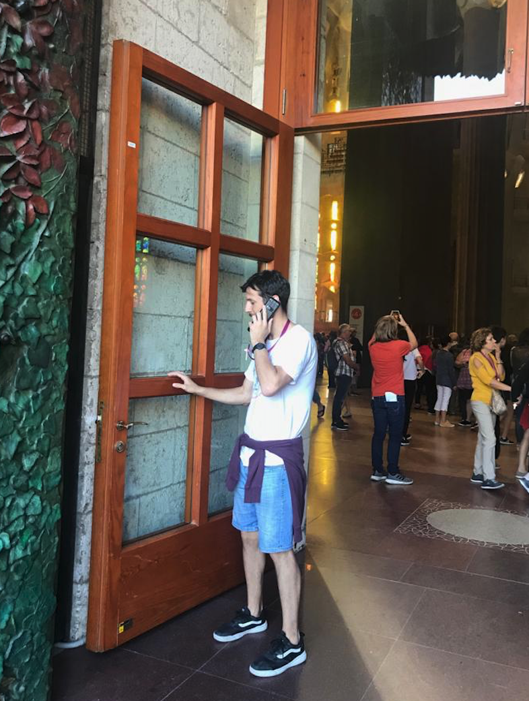

MSc Student @ Universitat Pompeu Fabra
BA, MSc in Economics @ Universidad Torcuato Di Tella
Github ● LinkedIn ● Twitter ● Resume
Email: julian.lopezbaasch01@estudiant.upf.edu
I am a creative data scientist who finds pleasure not only in learning from data, but also in creating from it. I have a solid understanding of machine learning foundations, mathematics and statistics, which allows me to think out of the box without flaws. My research lies in the intersection of Reinforcent Learning and Game Theory.